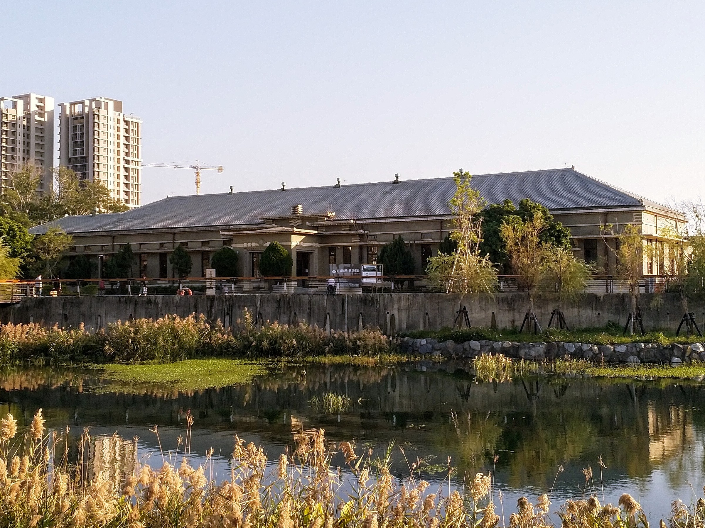

能量告急
繁忙日常讓年輕人渴望喘息，細胞們開始尋找理想的休憩空間。

一場關於歷史、自然與重新充電的城市探索。走進帝國製糖廠臺中營業所，找回自己的步調。
 城市充電計畫
城市充電計畫忙著上課、工作、回覆訊息，身體裡的細胞發出緊急警報。紅血球、白血球與夥伴們展開尋找「城市充電站」的任務，最後發現一座結合歷史記憶與湖畔綠意的空間。
這是一份以戲劇敘事包裝的景點行銷企劃：從消費者需求、競爭分析、SWOT 到 STP，重新思考年輕人的城市休閒。
※ 本頁展示劇本概念與企劃內容，並未聲稱影片已正式上映。
不需要遠行，也能為生活留一點空白。
繁忙日常讓年輕人渴望喘息，細胞們開始尋找理想的休憩空間。
從熱鬧商圈到河岸公園，團隊比較不同場域，找到歷史與自然共存的帝糖。
把「都市情緒防空洞」作為情感定位，邀請每個人放慢腳步。
聚焦交通便利、低規劃負擔的短暫休閒，回應學生與年輕上班族的生活節奏。
相較於勤美綠園道、臺中公園與柳川水岸，強調帝糖結合歷史建築、湖景及休憩體驗。
優勢是歷史與景觀；挑戰是提升知名度及活動吸引力；機會來自近距離休閒與社群傳播。
鎖定 18–25 歲、生活壓力較高的學生及職場新鮮人，傳遞感官降噪與心靈沉澱的價值。
真實景點照片 · 點選頁碼切換圖輯
照片來源：abic 愛貝客、寶寶溫旅行親子生活。圖片版權屬原作者，僅供課堂展示；正式公開發布前請確認使用授權或替換為自行拍攝的照片。
《城市充電計畫》是一份以帝國製糖廠臺中營業所為主題的學生創意行銷作品，透過擬人化的身體細胞，將景點分析轉化成有趣的戲劇故事。
帝國製糖廠臺中營業所建於 1935 年，位於臺中市東區樂業路 30 號。歷史建築與星泉湖畔空間，成為城市裡能放慢步調的去處。
查看官方景點資訊 ↗